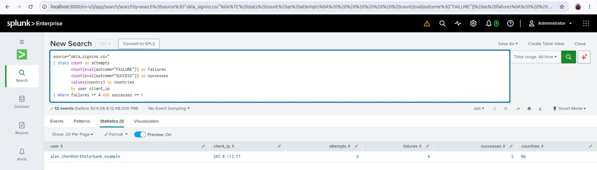
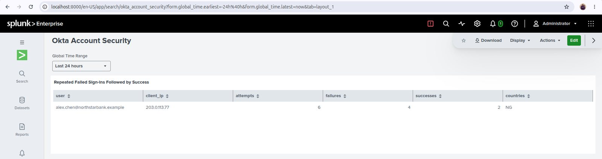

Okta account security: failed sign-ins followed by success
A Splunk detection and dashboard panel that flags repeated failed sign-ins followed by a successful login, grouped by user and client IP, over synthetic Okta-style events for a fictional bank.
Lab work with synthetic or lab-provided data. No production systems or real customer data were involved.
Evidence


Scope
A fictional banking identity-monitoring scenario. The dataset used fictional users on a documentation domain and documentation-range IP addresses, indexed in Splunk. No real Okta tenant or customer identity was accessed.
Detection logic
The search groups sign-in events by user and client_ip and keeps combinations with at least four failures and at least one success. The same logic powers a saved dashboard panel titled Repeated Failed Sign-Ins Followed by Success.
Results
| Signal | Why it matters |
|---|---|
| Repeated failed sign-ins | May indicate password guessing, but also mistyped credentials, stale automation or user error. |
| Success after failures | Raises priority, especially from a new IP, device or location. Does not prove account takeover on its own. |
| Matched account | One user and source IP returned 6 attempts, 4 failures and 2 successes. |
Recommended follow-up
- Validate the user, source, device, location, MFA outcome and session events against authorized identity logs.
- Ask the identity owner to confirm the activity through an approved contact path.
- If confirmed suspicious, follow the access-response policy: revoke sessions and remediate credentials or MFA.
- Tune thresholds using normal sign-in patterns, known VPN egress, service accounts and travel context.
Limitations
Synthetic demonstration data only. The panel surfaces a lead; it does not revoke sessions, reset credentials or prove compromise. IP geolocation is approximate and is not treated as identity evidence.